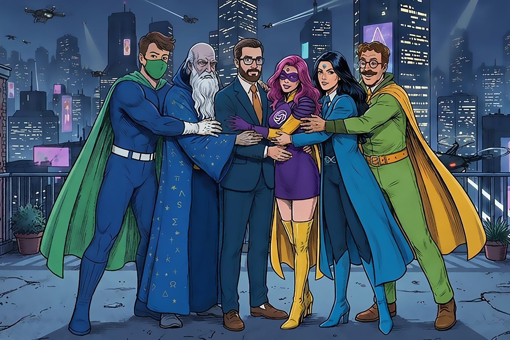

Le Pillo(w)le nascono dall'incontro tra una pillola e un cuscino: contenuti brevi, ma pensati per lasciare spazio alla riflessione. Un modo semplice e diretto per esplorare le sfide e le opportunità del nostro tempo.

L'innovazione è un pharmakon: apre possibilità, ma porta con sé nuove responsabilità. Se le Pillo(w)le raccontano le idee, le Cronache raccontano le loro origini.